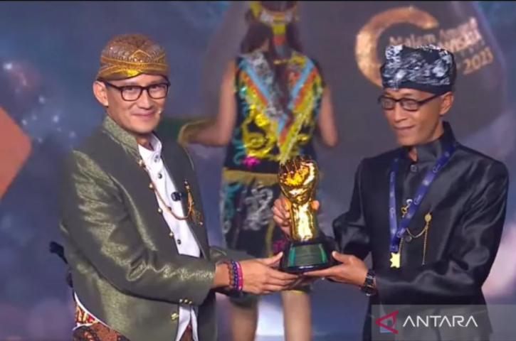
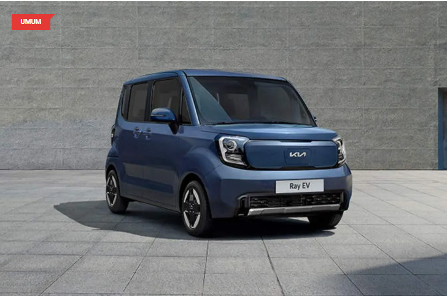

Menparekraf: Desa wisata perjalanan membangun Indonesia
Jakarta (ANTARA) - Menteri Pariwisata dan Ekonomi Kreatif (Menparekraf)/Kepala
Badan Pariwisata dan Ekonomi
Kreatif Sandiaga Salahuddin Uno mengatakan desa wisata tak sekadar program pemerintah, tetapi juga sebuah
perjalanan untuk membangun Indonesia.
Bersama masyarakat desa yang semangatnya sungguh luar biasa, ternyata bukan Indonesia yang membangun desa,
tapi desa yang membangun Indonesia dan saya yakin desa wisata bisa mendunia,
kata Sandiaga saat Malam
Anugerah Desa Wisata Indonesia (ADWI) 2023, di Jakarta, Minggu.
ADWI merupakan program puncak dari rangkaian kegiatan Anugerah Desa Wisata Indonesia 2023 yang merupakan salah
satu program pengembangan kepariwisataan Indonesia yang sedang digalakkan oleh Kementerian Pariwisata dan
Ekonomi Kreatif.
Kia luncurkan mobil mini Ray EV di Korea Selatan bulan depan
Jakarta (ANTARA) - Kia Corp. mengumumkan bahwa mereka akan meluncurkan versi
elektrifikasi dari mobil mini
Ray di pasar Korea Selatan bulan depan.
Dikutip dari Yonhap, Rabu (23/8), kendaraan listrik Ray dilengkapi dengan baterai berkapasitas 35,2 kWh dan
dapat menempuh jarak hingga 233 kilometer dengan sekali pengisian. Mobil itu juga dilengkapi dengan fitur
keamanan seperti sistem bantu menjaga jalur dan sistem bantu menghindari tabrakan pada titik buta.
Mobil listrik mini Ray dihargai antara 28 juta hingga 30 juta won (sekitar Rp323 juta hingga Rp346 juta),
tergantung pada opsi yang dipilih.
Pada 2020, Kia menyatakan akan meningkatkan rasio penjualan mobil listrik menjadi 25 persen pada tahun 2029
dengan meluncurkan puluhan model baru di pasar global.
Kia baru-baru ini juga mengumumkan akan mengungkap desain SUV listrik EV5 pada pameran Industri Mobil
Internasional Chengdu 2023. EV5 akan diproduksi di pabrik mereka di Yancheng, China.
Kia bertujuan untuk menghidupkan kembali penjualan di pasar otomotif terbesar di dunia melalui peluncuran
model kendaraan listriknya, di tengah percepatan elektrifikasi. Perusahaan mengatakan bahwa mereka akan
merilis rincian produk EV5 pada Kia EV Day pada Oktober.
Kemendikbud-Google Buka Pendaftaran Bangkit 2023 Batch 2

KOMPAS.com - Kementerian Pendidikan, Kebudayaan, Riset dan Teknologi (Kemendikbud Ristek) bersama Google
Indonesia kembali membuka pendaftaran Program Bangkit batch kedua bagi 4.000 peserta. Pada Bangkit 2023 batch
pertama, sebanyak 5.000 mahasiswa berhasil lolos untuk mengikuti program. Peserta akan menjalani 900 jam untuk
mengikuti pelatihan berbasis industri di bidang teknologi, pengembangan soft skills hingga kemampuan bahasa.
Program Bangkit sudah dikenal telah membuka banyak peluang bagi mahasiswa Indonesia yang ingin berkarier di
dunia IT.
Tidak tanggung-tanggung, Google mengklaim 90 persen lulusan Bangkit menyatakan bahwa pengalaman mengikuti
program ini telah membuka pintu mereka untuk meraih karier pertama. Program Bangkit sendiri telah dirancang
dengan kurikulum solid yang menggabungkan pembelajaran mandiri dan pembelajaran langsung untuk tiga alur
belajar utama yaitu Machine Learning, Mobile Development, dan Cloud Computing. Tidak hanya melewati 900 jam
pelajaran ilmu IT, para peserta juga mendapatkan pelatihan soft skills dan Bahasa Inggris. Kurikulum ini
diharapkan dapat melahirkan talenta-talenta baru yang mempercepat transformasi digital yang membawa Indonesia
melesat ke masa depan. Human Capital at Astra Financial, Grase Oksiana mengatakan bahwa Saat ini kandidat yang
memiliki pengalaman di big data sangat dibutuhkan.
Komisi Pemberantasan Korupsi (KPK) dibubarkan ?

Pernyataan Ketua Umum PDI-P, Megawati Soekarnoputri, yang menginginkan agar Komisi Pemberantasan Korupsi (KPK)
dibubarkan karena kinerjanya dianggap tidak efektif memicu kritikan dari pegiat anti-korupsi dan warganet di
media sosial.
Dewan Pengawas Indonesia Corruption Watch, Dadang Trisasongko, menilai Megawati seharusnya menyalahkan para
pimpinan partai politik yang mengusung revisi UU KPK sehingga mengakibatkan kinerja lembaga tersebut melorot
dari periode-periode sebelumnya.
Sebab sejak undang-undang KPK yang baru disahkan pada 2019, data Indeks Persepsi Korupsi (IPK) tahun 2022
menunjukkan Indonesia memperoleh skor 34 atau turun empat poin dan merupakan skor terendah sejak 2015.
Adapun sejumlah warganet menyebut Megawati mestinya bercermin karena justru politikus dari PDIP banyak
ditangkap KPK.